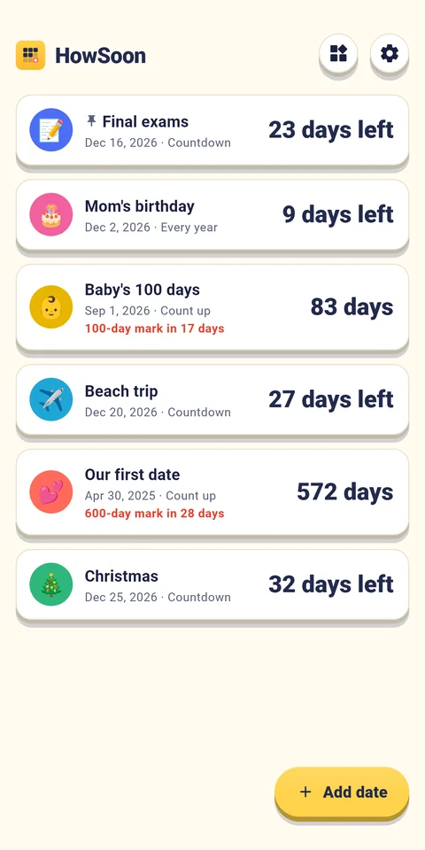
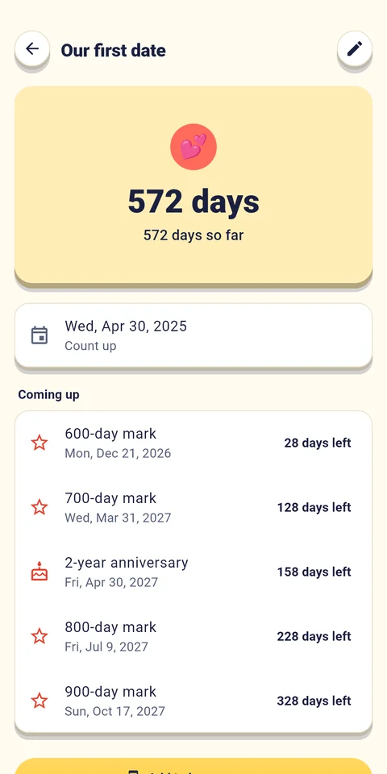
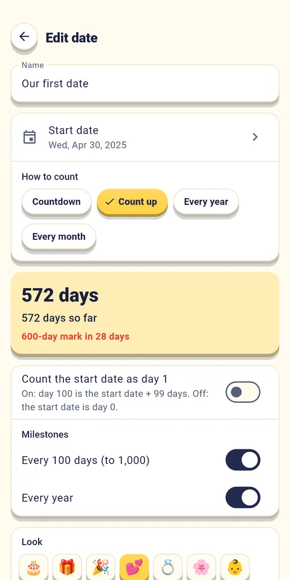
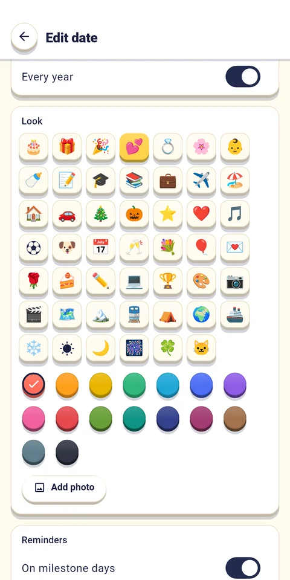
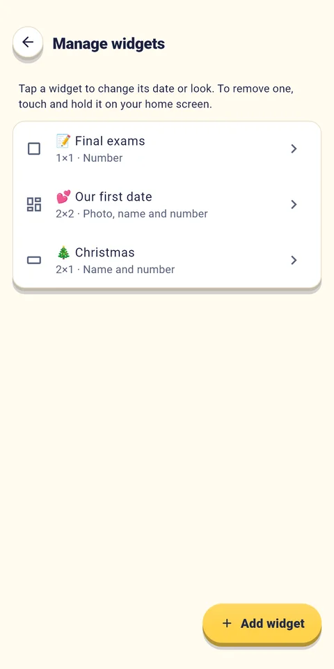
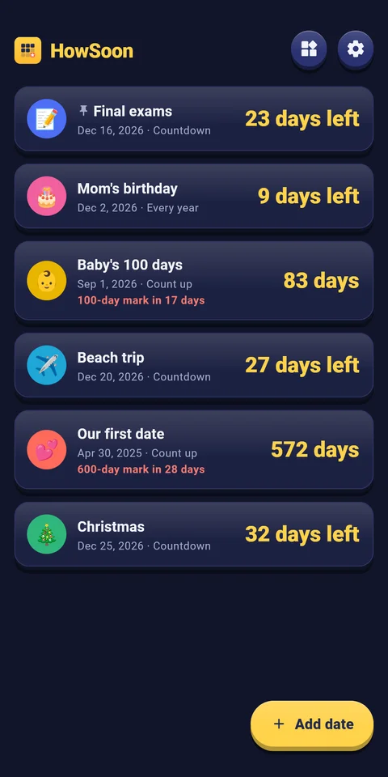
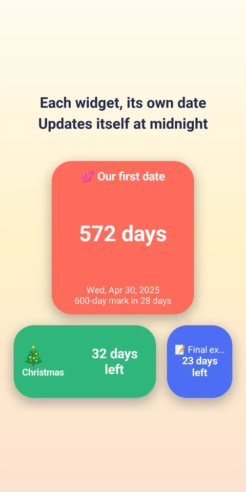

Screenshots







App Info
| App Name | HowSoon |
|---|---|
| Version | 1.0.0 |
| Developer | Willee Project |
| Platform | Android |
HowSoon counts the days until a date and the days since a date, and shows them on your home screen. Use it for exams, birthdays, trips, anniversaries or any day you are waiting for or remembering.
- There is no sign-up and no login. Your dates and photos are stored on your device.
- It works offline. The internet is used only for the ad at the bottom of the app and for usage statistics and crash reports.
- Widgets update by themselves at midnight, and you can set reminders for the days that matter.
- The language follows your device settings. English, Korean, Japanese and Chinese (Simplified and Traditional) are supported, and you can pick one in Settings.
- Every change is saved to the device the moment it happens (chapter 11).
1. Getting started
- When you open the app, the list of your dates appears. The first time it is empty.
- Tap Add date at the bottom to make one (chapter 2).
- In the top bar, next to the HowSoon name, there are the Manage widgets button (chapter 8) and the Settings button (chapter 10).
- Deleted dates at the bottom left shows the dates you deleted (chapter 6).
- Each card in the list shows the date's name and the number: days left, or days counted. The list shows pinned dates first, then the date whose next day comes soonest.
- Tap a card to open that date: a large number, a sentence that says it in words, and the coming milestones. The Edit button is in the top bar.
2. Adding a date
Tap Add date, and under "What are you counting?" pick a template. It fills in sensible settings, and you can change all of them afterwards.
| Template | What it starts with |
|---|---|
| Birthday | Every year. Reminders on the day and 1 day before |
| Couple | Count up. Milestone reminders on |
| Exam | Countdown. Reminders on the day, 1 day before and 1 week before |
| Trip | Countdown. Reminders on the day and 1 day before |
| Baby | Count up, for counting the days since a baby was born. Milestone reminders on |
| Custom | Countdown, with no reminders |
Then fill in the screen:
| Item | What it does |
|---|---|
| Name | What the date is called, for example "Exam" or "Trip" |
| Date, or Start date | The day itself. For a count up it is the day you start counting from |
| How to count | Countdown, Count up, Every year or Every month (chapter 3) |
| Count the start date as day 1 | For a count up only (chapter 3) |
| Milestones | For a count up only (chapter 4) |
| Look | Emoji, color and photo (chapter 5) |
| Reminders | When to be reminded (chapter 9) |
| Pin to top | Keeps this date at the top of the list |
- A sentence under the settings tells you how the date will be counted, for example "Today is day 100".
- Changes apply when you tap Save. Delete deletes the date (chapter 6).
- If a date was made in a newer version of HowSoon, a note says so and it cannot be changed until you update the app.
3. How days are counted
| How to count | What it shows |
|---|---|
| Countdown | The days left until the date. On the day itself it shows Today. The day after, it shows how many days ago it was |
| Count up | The days counted since the start date |
| Every year | The days left until the next time the date comes round, such as a birthday |
| Every month | The days left until the next time the day of the month comes round |
- The app never shows "D-0". The day itself is always written Today.
- A day that does not exist in a month (February 29, or the 31st) falls on the last day of that month.
Day 1 or day 0
For a count up there are two ways to count, and you choose with Count the start date as day 1:
- On: the start date is day 1, so day 100 is the start date plus 99 days.
- Off: the start date is day 0.
When you make the date, the sentence under the settings shows the result in words, such as "Today is day 100". The Couple and Baby templates start with this switch on when the app is in Korean or Japanese and off in the other languages. The choice is saved with each date, so changing the app language never changes your numbers.
When it is on, the 1-year anniversary falls on day 366. The sentence says so, for example "The 1-year anniversary (2027-01-31) is day 366". Turn the switch off if you want the anniversary to land on day 365.
4. Milestones
For a count up, the Milestones switches pick which days are marked:
- Every 100 days (to 1,000): day 100, 200 … up to 1,000.
- Every year: each anniversary.
The date screen lists the next ones under Coming up, and the card shows how many days are left until the next one ("100-day mark in 12 days"). On the day itself, the milestone is celebrated (chapter 10), and you can get a reminder (chapter 9).
5. Look and pinning
- Emoji and color: pick from the lists. The color is used on the card, the date screen and the widget.
- Photo: Add photo opens Android's photo picker. Pick one photo. The app saves a smaller copy of it (at most 1080 pixels on the long side, without location information), and it is used as the background of the date screen and of the large widget. Change photo and Remove photo are in the same place. Photos take up to 18 MB in total; when it is full, remove a photo from another date first.
- Pin to top: keeps the date at the top of the list.
6. Deleting and restoring
- Delete is on the edit screen. After deleting, "Deleted." and Undo appear for a moment.
- A deleted date stays for 30 days. Deleted dates (N) at the bottom left of the list opens them.
- Restore brings a date back.
- Delete for good removes one date at once (a window asks first). It cannot be restored.
- Empty deleted dates at the bottom removes all of them at once (a window asks first).
- After 30 days, deleted dates are removed when you open the app.
- A widget that shows a deleted date reads "Deleted date · tap to choose". If you restore the date, the widget shows it again.
7. Widgets and how they update
There are three sizes, and you can place as many as you like, each with its own date:
| Size | What it shows |
|---|---|
| 1×1 · Number | The number |
| 2×1 · Name and number | The name and the number |
| 2×2 · Photo, name and number | The photo, the name, the number, the date and the next milestone |
The widget updates by itself at midnight, so the number is right when you wake up. You do not need to open the app. Tap a widget to open its date in the app.
8. Adding and changing widgets
Three ways to add one
- From the home screen widget list: touch and hold an empty spot on your home screen, open Widgets, find HowSoon and drag the size you want. The Date for this widget screen opens. Pick a date, set the look if you like, and tap Done. If you have no dates yet, tap Create a date in the app. Cancel stops.
- From a date: on the date screen, tap Add to home screen, pick the Widget size, and the widget is placed with that date. If your home screen cannot add widgets from the app, a note says so; use the widget list above.
- From Manage widgets: tap the Manage widgets button in the top bar of the list, then Add widget. Choose Which date should it show? (or Create a new date), then the size.
The look
On the Date for this widget screen you can also set:
| Item | What it does |
|---|---|
| Background | Date color, Light, Dark or Device (follows your device's light or dark mode) |
| Background opacity | How solid the background is |
| Text size | Small, Medium or Large |
Changing one later
- Touch and hold the widget on your home screen and choose its settings (the name of the button differs by phone, for example Settings). The same screen opens.
- Or open Manage widgets and tap the widget. It lists every widget with its date and size.
Removing one
To remove a widget, touch and hold it on your home screen and remove it. The app cannot remove widgets for you; Manage widgets says so.
9. Reminders
Under Reminders on a date, choose when to be reminded:
- On the day, 1 day before, 1 week before (for a countdown or a yearly or monthly date)
- On milestone days (for a count up)
A reminder arrives at the Reminder time (default 9:00 AM). Change it in Settings → General → Reminder time.
- The first time you save a date with a reminder, Android asks whether HowSoon may show notifications. If you say no, or notifications are off later, the app shows "Notifications are off for HowSoon." with Open settings.
- A reminder names the date and says how many days are left or which milestone it is. Tap it to open that date.
- Reminders are made by the app on your device. There are no ads in them.
When updates and reminders come late
The app does not use the "exact alarm" permission, so Android decides the exact moment.
- Usually a widget or a reminder arrives within a few minutes of its time.
- If the device is in deep sleep, it can be up to about 1 hour late. Turn the screen on and it catches up soon.
- If the battery saving settings of your device restrict HowSoon, it can be late more often. Manage widgets shows "Battery use is restricted for HowSoon, so widgets may update late." Check the battery saving settings of your device.
- If you force-stop the app (for example from Android's app settings), Android cancels its scheduled updates. Open the app once, and the widgets and reminders start working again.
10. Settings and celebrations
Open them with the Settings button in the top bar of the list. There are two groups.
Sound & effects
| Item | What it does |
|---|---|
| Sound effects | Turns the sounds on or off |
| Vibration | Turns the vibration on or off |
| Reduce effects | Turns off the celebration animation |
On the day of a date, or on a milestone day, when you open the app a short celebration plays once for that date that day. With Reduce effects on there is no movement, only the sound if sound effects are on.
General
| Item | What it does |
|---|---|
| Manage widgets | The same list as the top bar button (chapter 8) |
| Reminder time | When reminders arrive. The default is 9:00 AM |
| Export | Saves your dates and photos in one file (chapter 11) |
| Import | Merges the dates from an exported file (chapter 11) |
| Restore an earlier copy | Goes back to an automatic copy (chapter 11) |
| Language | Follow the Device language (default) or pick from the list (English · 日本語 · 한국어 · 简体中文 · 繁體中文) |
| Privacy options | Reopens the ad consent window. Shown only in regions where consent is required (such as Europe) |
| About | The version, this guide (How to use), Rate on Google Play, Privacy policy, Open-source licenses, More apps (opens the store) and See all apps |
The screen colors follow your device's dark mode. There is no separate switch in the app.
11. Export, import, copies and ads
Export
Settings → General → Export puts your dates and photos in one file named like HowSoon-2026-01-31.json. Choose Share to send it to the app you pick, or Save to device to save it in a folder. "Saved." appears when it is saved. The file is not sent to us, but whoever receives it can read your dates and see your photos, so please check before you send.
Import
Settings → General → Import: pick an exported file. The app shows how many dates and photos it holds ("… Dates with the same ID keep the newer edit."). After you confirm, the dates are merged into yours: dates that are new are added, and a date that is in both keeps the version that was edited later. Photos that do not fit in the 18 MB are left out, and the app tells you. A file from a newer version asks you to update HowSoon first, and a file that is not from HowSoon is refused.
Restore an earlier copy
Once a day the app keeps a copy of your dates, and the latest 3 days are kept. A copy is also kept right before every import and every restore.
- Settings → General → Restore an earlier copy lists them.
- Pick one and confirm. Your dates are replaced by that copy, and your current dates are kept as a copy as well, so you can go back again.
Saving and backup
- Saving: every change is saved on the device right away.
- Backup: if Google backup (Android Auto Backup) is on, your dates, photos and settings are backed up too and come back when you switch devices or reinstall the app. You can turn it off in the backup menu of your Android settings. The daily copies are left out of it. Uninstalling the app deletes its data on the device.
Ads
- There is a single banner ad at the very bottom of the app. It is the only ad. There are no ads in widgets or reminders. The ad strip is hidden when the keyboard is open.
- In regions where consent is required (such as Europe), an ad consent window appears the first time you open the app, and you can change it later under Privacy options in Settings.
- There are no in-app purchases, and nothing is sent to a server.
- For details, see the Privacy Policy.